What differentiates Antarleen is not just what we do, but how we work with organizations. Our consulting approach goes beyond recommendations and focuses on real, on-ground implementation that becomes part of the organization’s way of working.
We follow a structured consulting methodology called BOTA – Build, Operate, Transfer, and Audit. This approach ensures that systems and processes are not only designed, but are also implemented, stabilized, and sustained within the organization over time.
Build
Laying foundation for system-led operations
Operate
Making systems run, not just exist
Transfer
From consultant-led to team-owned
Audit
Reviewing systems to prevent drift
Co-create processes with founders & key leaders
Align systems to real-world constraints
Build for scale, not documentation
Handhold teams during execution
Solve resistance, confusion, and early failures
Ensure clarity, discipline, and adoption
Capability-building of internal leaders
Gradual reduction of external dependency
Systems continue without consultants
Structured reviews and audits
Identify gaps before they become problems
Continuous strengthening over time
Services
Vision Alignment
Evolving in to an aligned belief system and value-driven organization.
Know More →Strategic Management
Translating a long term vision into a strategic roadmap with clear priorities, milestones, and measurable outcomes.
Know More →Process Design & Implementation
Pathway To Create A Sustainable Auto-Pilot Mode Run Organization
Know More →Strategic & Operational Human Resources
Manpower Planning & Workload Management, Establishing role clarity , Growth matrix & Competency Mapping through structured HR systems.
Know More →Leadership Management & Development
Developing a strong second line of leadership capable of independently driving teams, decisions, and accountability .
Know More →Performance Management Systems
A structured performance evaluation mechanism of every employee designed to align their performance with the organizational goals .
Know More →Sales Management & Standardization
Developing a predictable sales pipeline that improves conversion ratios and delivers consistent, trackable revenue growth
Know More →Organizational Power & Governance
Institutionalize decision rights and governance structures that reduce informal influence and strengthen leadership accountability.
Know More →Franchise Module Development
Make your business franchiseable by standardizing operations, validating financial viability, and establishing governance frameworks for scalable expansion.
Know More →Our Clients
 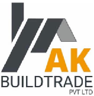
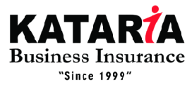
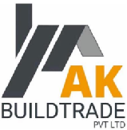
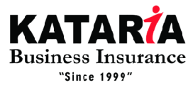
 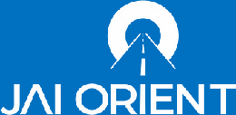
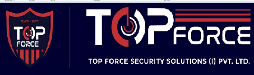
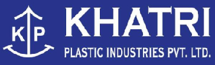
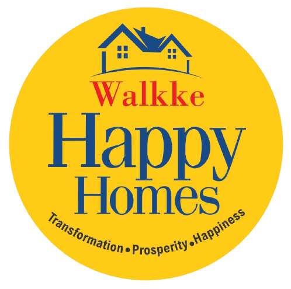
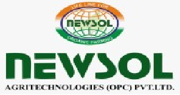
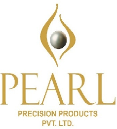
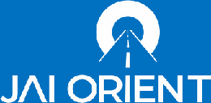
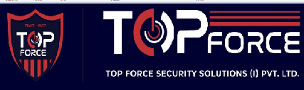
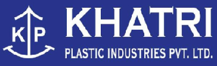
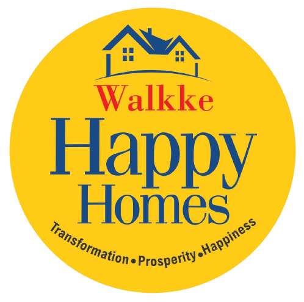
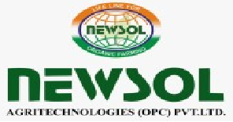
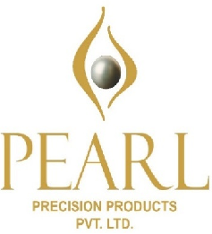

Let’s Introspect
Detailed Organizational Scrutiny Exercise (D.O.S.E)
An in-depth study will be conducted of your organization wherein the following aspects are thoroughly evaluated to build clarity, alignment, and execution readiness.
- Entrepreneur’s Goal, Vision & Target assessment
- Assessing key organizational capabilities
- Understanding the current modus operandi of the business
- Identifying organizational challenges, obstacles & hindrances
- Analyzing departmental challenges and limitations
- 360° study of resources, processes & value systems
After the D.O.S.E, a robust scrutiny report is shared along with an execution-based, detailed action plan that clearly prescribes solutions to transform your organization into a performance-oriented, systems and process-driven organization.